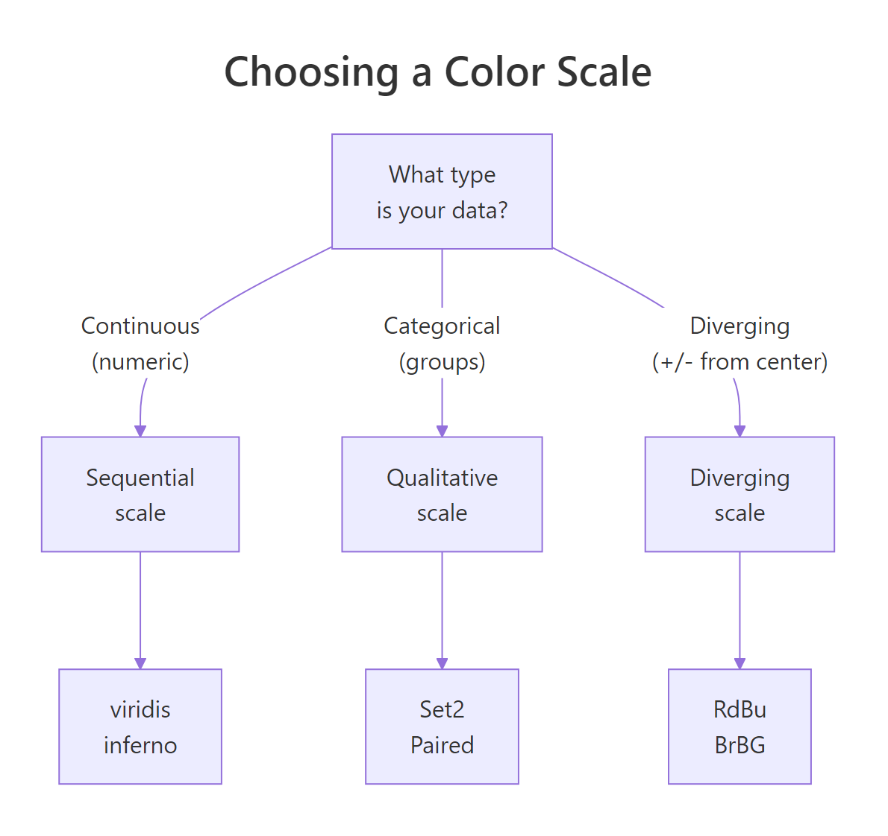
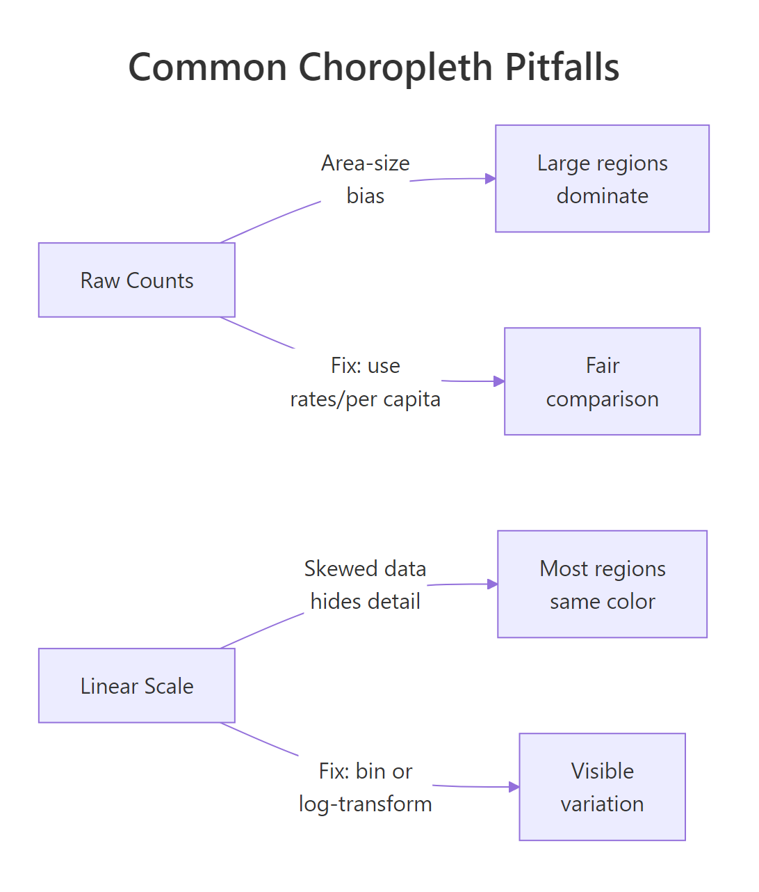

Choropleth Maps in R: ggplot2 + sf, Fill Countries, States, or Districts by Value
A choropleth map shades geographic regions, countries, states, or districts, by a data variable so you can spot spatial patterns at a glance. In R, the sf package supplies the polygon geometry and ggplot2's geom_sf() turns any numeric or categorical column into a colour-filled map.
How do you build a choropleth map in R?
Every choropleth has two ingredients: polygon geometry that draws region boundaries and a data column that controls the fill colour. You join them by a shared region identifier, then hand the result to ggplot2. Let's jump straight in with a world map coloured by GDP per capita.
RLoad sf polygons and GDP data
# Load packageslibrary(sf)library(ggplot2)library(dplyr)library(maps)# Get world polygon geometryworld_sf <-st_as_sf(maps::map("world", plot =FALSE, fill =TRUE))# Create sample GDP data for selected countriesgdp_data <-data.frame( ID =c("USA", "Canada", "Brazil", "UK", "France", "Germany","China", "India", "Japan", "Australia", "Mexico", "Russia","South Africa", "Egypt", "Nigeria", "Argentina", "Italy","Spain", "Sweden", "Norway"), gdp_per_capita =c(76330, 52720, 8920, 46510, 42330, 48720,12560, 2410, 33820, 64490, 10820, 12170,6010, 3920, 2180, 13650, 34780,29950, 55960, 82240))# Join data to geometryworld_gdp <- world_sf |>left_join(gdp_data, by ="ID")# Plot the choroplethggplot(world_gdp) +geom_sf(aes(fill = gdp_per_capita), colour ="white", linewidth =0.2) +scale_fill_viridis_c(option ="viridis", na.value ="grey90", labels = scales::comma) +labs(title ="GDP per Capita by Country", fill ="GDP per\ncapita ($)") +theme_void()#> [A world map where 20 countries are shaded from dark purple (low GDP)#> to bright yellow (high GDP). Countries without data appear light grey.]
The map instantly reveals the wealth gap: Norway, the US, and Australia light up in yellow while India and Nigeria sit in deep purple. Countries without data stay grey, a visual reminder of missing observations.
Key Insight
The join is what turns a plain map into a choropleth. Without it, you have outlines. After the left_join(), every polygon row carries a data value that geom_sf() maps to a fill colour. Get the join key right and the rest is cosmetic.
Let's peek at what the joined data looks like under the hood.
RInspect joined sf object
# Inspect the joined sf objectworld_gdp |>filter(!is.na(gdp_per_capita)) |>select(ID, gdp_per_capita) |>head(5)#> ID gdp_per_capita geometry#> 1 Canada 52720 MULTIPOLYGON (((-59.78818 4...#> 2 USA 76330 MULTIPOLYGON (((-155.5813 1...#> 3 Mexico 10820 MULTIPOLYGON (((-117.1323 3...#> 4 Brazil 8920 MULTIPOLYGON (((-48.48082 -...#> 5 Argentina 13650 MULTIPOLYGON (((-68.63401 -...
Each row holds a country name, the GDP value, and a geometry column containing the polygon coordinates. This is just a regular data frame with a spatial twist, you can filter, mutate, and summarise it like any other tibble.
Try it: Add a population column to gdp_data for any 5 countries and join it to world_sf. Plot a choropleth filled by population instead of GDP per capita.
RExercise: Map world population
# Try it: add population and map itex_pop_data <-data.frame( ID =c("USA", "China", "India", "Brazil", "Japan"), population =c(331000000, 1412000000, 1408000000, 214000000, 125000000))ex_world_pop <- world_sf |>left_join(ex_pop_data, by ="ID")# your code here, plot with geom_sf(aes(fill = population))
Click to reveal solution
RWorld population map solution
ex_pop_data <-data.frame( ID =c("USA", "China", "India", "Brazil", "Japan"), population =c(331000000, 1412000000, 1408000000, 214000000, 125000000))ex_world_pop <- world_sf |>left_join(ex_pop_data, by ="ID")ggplot(ex_world_pop) +geom_sf(aes(fill = population), colour ="white", linewidth =0.2) +scale_fill_viridis_c(na.value ="grey90", labels = scales::comma) +labs(title ="Population by Country", fill ="Population") +theme_void()#> [World map with China and India in bright yellow, USA/Brazil in#> mid-range, Japan in darker shade, rest grey.]
Explanation: The same workflow applies, create a data frame, join to world_sf, and map the new column to fill.
How do you create a US state choropleth?
The maps package includes US state boundaries ready to convert. The main gotcha is that state names come back in lowercase, your data source might use title case or abbreviations, so you need to normalise before joining.
RBuild US state income map
# Build US state geometryus_states <-st_as_sf(maps::map("state", plot =FALSE, fill =TRUE))# Create sample data, median household income by statestate_income <-data.frame( ID =c("california", "texas", "new york", "florida", "illinois","pennsylvania", "ohio", "georgia", "michigan", "north carolina","new jersey", "virginia", "washington", "arizona", "massachusetts","tennessee", "indiana", "missouri", "maryland", "wisconsin","colorado", "minnesota", "south carolina", "alabama", "louisiana","kentucky", "oregon", "oklahoma", "connecticut", "utah","iowa", "nevada", "arkansas", "mississippi", "kansas","new mexico", "nebraska", "idaho", "west virginia", "hawaii","new hampshire", "maine", "montana", "rhode island", "delaware","south dakota", "north dakota", "wyoming"), median_income =c(84907, 67404, 75157, 63062, 72205,67587, 59855, 61980, 63202, 60516,89296, 80615, 82228, 65913, 89645,59695, 61944, 60598, 90203, 67080,82254, 77706, 59318, 55727, 52295,55573, 71562, 55826, 83771, 74197,65573, 66274, 52528, 48610, 64521,53992, 66644, 62337, 48037, 84857,83449, 64767, 60560, 71169, 72724,63920, 68131, 68002))# Join and plotus_income <- us_states |>left_join(state_income, by ="ID")ggplot(us_income) +geom_sf(aes(fill = median_income), colour ="white", linewidth =0.3) +scale_fill_viridis_c(option ="plasma", labels = scales::dollar) +labs(title ="Median Household Income by US State", fill ="Median\nIncome") +theme_void()#> [US state map shaded from dark purple (Mississippi ~$48K) to#> bright yellow (Maryland, Massachusetts ~$90K).]
The coastal wealth corridor jumps out immediately, Maryland, New Jersey, Massachusetts, and Connecticut cluster at the top, while Mississippi and West Virginia sit at the bottom. That spatial pattern would be invisible in a bar chart.
Warning
State names in maps::map() are lowercase, but most data sources use title case. If your join returns all NA fills, check for case mismatches. Use tolower() on your data before joining: my_data$state <- tolower(my_data$state).
You can also highlight specific states to draw attention to particular findings.
RHighlight top five income states
# Highlight the top 5 highest-income statestop5 <- state_income |>arrange(desc(median_income)) |>head(5) |>pull(ID)highlighted <- us_income |>mutate(is_top5 =ifelse(ID %in% top5, "Top 5", "Other"))ggplot(highlighted) +geom_sf(aes(fill = median_income), colour ="white", linewidth =0.3) +geom_sf(data =filter(highlighted, is_top5 =="Top 5"), colour ="red", fill =NA, linewidth =1) +scale_fill_viridis_c(option ="plasma", labels = scales::dollar) +labs(title ="Top 5 Highest-Income States Highlighted", fill ="Median\nIncome") +theme_void()#> [Same income map but the top 5 states have bold red outlines.]
The trick is layering a second geom_sf() with fill = NA and a bold border colour on top of the choropleth. This works because ggplot2 draws layers in order, the red outlines sit on top of the filled polygons.
Try it: Highlight the 5 lowest-income states with a blue border instead of red.
RExercise: Highlight bottom five states
# Try it: highlight bottom 5 statesex_bottom5 <- state_income |>arrange(median_income) |>head(5) |>pull(ID)# your code here, add a second geom_sf layer with blue borders
Click to reveal solution
RBottom five highlight solution
ex_bottom5 <- state_income |>arrange(median_income) |>head(5) |>pull(ID)ex_highlighted <- us_income |>mutate(is_bottom5 =ifelse(ID %in% ex_bottom5, "Bottom 5", "Other"))ggplot(ex_highlighted) +geom_sf(aes(fill = median_income), colour ="white", linewidth =0.3) +geom_sf(data =filter(ex_highlighted, is_bottom5 =="Bottom 5"), colour ="blue", fill =NA, linewidth =1) +scale_fill_viridis_c(option ="plasma", labels = scales::dollar) +labs(title ="Bottom 5 Lowest-Income States", fill ="Median\nIncome") +theme_void()#> [Income map with Mississippi, West Virginia, Arkansas, Louisiana,#> and Alabama outlined in blue.]
Explanation: Same layering technique, filter to the bottom 5 and overlay geom_sf() with blue borders.
How do you make a choropleth from custom polygons or districts?
Not all maps come from built-in datasets. Sometimes you need district-level, zip-code, or entirely custom regions. The approach is the same: build an sf object with polygon geometry and a data column, then plot with geom_sf().
Let's simulate six rectangular districts and colour them by a performance score.
RCustom rectangular district polygons
# Create 6 rectangular district polygons in a 3x2 gridmake_rect <-function(x, y, w =1, h =1) {st_polygon(list(matrix(c(x, y, x+w, y, x+w, y+h, x, y+h, x, y), ncol =2, byrow =TRUE)))}district_polys <-st_sfc(make_rect(0, 0), make_rect(1, 0), make_rect(2, 0),make_rect(0, 1), make_rect(1, 1), make_rect(2, 1))district_data <-data.frame( district =paste("District", LETTERS[1:6]), score =c(82, 67, 91, 54, 78, 88))district_sf <-st_sf(district_data, geometry = district_polys)# Plot the district choroplethggplot(district_sf) +geom_sf(aes(fill = score), colour ="white", linewidth =1) +geom_sf_text(aes(label =paste0(district, "\n", score)), size =3.5, colour ="white", fontface ="bold") +scale_fill_viridis_c(option ="mako", direction =-1) +labs(title ="Performance Score by District", fill ="Score") +theme_void()#> [A 3x2 grid of coloured rectangles. District C (91) is lightest,#> District D (54) is darkest. Labels show name + score inside each cell.]
Each rectangle is an st_polygon built from five coordinate pairs (the fifth closes the shape back to the start). We bundle them into an sfc geometry column, attach a data frame, and get an sf object ready for geom_sf(). This same pattern works whether you load polygons from a shapefile with st_read() or build them from scratch.
Note
In real projects, you'd load shapefiles with st_read() or GeoJSON with st_read("file.geojson"). The code pattern is identical: load geometry, attach data, join, plot. We build polygons manually here because the browser-based R environment doesn't have access to local files.
Adding labels with geom_sf_text() makes the map self-explanatory, readers don't need to cross-reference the legend for every region.
Try it: Add a seventh district polygon at position (3, 0) with a score of 73 and label it "District G".
RExercise: Add District G
# Try it: add District Gex_new_poly <-make_rect(3, 0)ex_new_row <-data.frame(district ="District G", score =73)# your code here, bind the new polygon to district_sf and plot
Click to reveal solution
RAdd District G solution
ex_new_poly <-make_rect(3, 0)ex_new_sf <-st_sf(data.frame(district ="District G", score =73), geometry =st_sfc(ex_new_poly))ex_districts <-rbind(district_sf, ex_new_sf)ggplot(ex_districts) +geom_sf(aes(fill = score), colour ="white", linewidth =1) +geom_sf_text(aes(label =paste0(district, "\n", score)), size =3.5, colour ="white", fontface ="bold") +scale_fill_viridis_c(option ="mako", direction =-1) +labs(title ="Performance Score by District", fill ="Score") +theme_void()#> [A 4x2 grid (with the extra cell in the bottom row) now showing#> District G in mid-range colour with score 73.]
Explanation: Use rbind() to stack sf objects. The new polygon gets its own row with geometry and data, then the whole set plots together.
Which colour scale should you use for a choropleth?
Colour choices can make or break a choropleth. A poor palette hides patterns or misleads the reader. The right scale depends on what kind of data you're mapping.

Figure 1: Decision tree for choosing sequential, diverging, or qualitative colour scales.
Sequential scales work for data that goes from low to high, income, temperature, population density. The viridis family (viridis, plasma, inferno, mako) is the gold standard because the colours are perceptually uniform: equal steps in data produce equal steps in perceived brightness.
RSequential viridis income map
# Sequential: viridis on US state incomeggplot(us_income) +geom_sf(aes(fill = median_income), colour ="white", linewidth =0.3) +scale_fill_viridis_c(option ="viridis", labels = scales::dollar) +labs(title ="Sequential Scale: viridis", fill ="Income") +theme_void()#> [US map with smooth gradient from dark purple (low) to yellow (high).]
Tip
Viridis is colourblind-friendly and prints well in greyscale. About 8% of men have some form of colour vision deficiency. Viridis was designed so that every step is distinguishable regardless of colour vision type.
Diverging scales are for data with a meaningful centre point, temperature anomalies (above/below average), election margins (red vs blue), or deviation from a target.
RDiverging RdBu deviation scale
# Diverging: show deviation from national mediannational_median <-median(state_income$median_income, na.rm =TRUE)us_diverge <- us_income |>mutate(deviation = median_income - national_median)ggplot(us_diverge) +geom_sf(aes(fill = deviation), colour ="white", linewidth =0.3) +scale_fill_distiller(palette ="RdBu", direction =1, labels = scales::dollar) +labs(title ="Deviation from National Median Income", fill ="Deviation") +theme_void()#> [US map where states above median are blue, below median are red,#> near median are white/pale.]
Red states fall below the national median, blue states sit above it, and the pale middle band shows states near the centre. The eye immediately groups the map into "above" and "below" camps.
Categorical scales suit grouped data, regions, political parties, climate zones.
RCategorical Census region map
# Categorical: colour US states by Census regionus_regions <- us_states |>mutate(region =case_when( ID %in%c("maine", "new hampshire", "vermont", "massachusetts","rhode island", "connecticut", "new york", "new jersey","pennsylvania") ~"Northeast", ID %in%c("ohio", "michigan", "indiana", "illinois", "wisconsin","minnesota", "iowa", "missouri", "north dakota","south dakota", "nebraska", "kansas") ~"Midwest", ID %in%c("maryland", "delaware", "virginia", "west virginia","north carolina", "south carolina", "georgia", "florida","kentucky", "tennessee", "alabama", "mississippi","arkansas", "louisiana", "oklahoma", "texas") ~"South",TRUE~"West" ))ggplot(us_regions) +geom_sf(aes(fill = region), colour ="white", linewidth =0.3) +scale_fill_brewer(palette ="Set2") +labs(title ="US States by Census Region", fill ="Region") +theme_void()#> [US map with 4 distinct colours, one per region. Geographic#> clustering is immediately visible.]
Key Insight
Sequential scales show magnitude, diverging scales show deviation from a centre point, and qualitative scales show group membership. Choosing the wrong type makes your map misleading, a rainbow scale on sequential data implies boundaries that don't exist.
Try it: Apply the "inferno" viridis palette to the US income map and reverse its direction so that high income appears dark instead of bright.
ggplot(us_income) +geom_sf(aes(fill = median_income), colour ="white", linewidth =0.3) +scale_fill_viridis_c(option ="inferno", direction =-1, labels = scales::dollar) +labs(title ="Inferno Palette (Reversed)", fill ="Income") +theme_void()#> [US map with reversed inferno: high income is dark, low income is bright yellow.]
Explanation:direction = -1 reverses any viridis scale. The default (direction = 1) maps low values to dark colours.
How do you avoid the area-size bias problem?
Large regions dominate visual attention on a choropleth. Russia and Canada fill half the world map, while tiny but data-rich countries like Singapore or Luxembourg are nearly invisible. This creates a perceptual bias: the eye weights large areas more heavily, even when their values are unremarkable.
The fix has two parts: normalise your data (use rates, not raw counts) and bin skewed distributions.
RRaw GDP shows area bias
# Add raw GDP (not per capita) to show the biasworld_bias <- world_gdp |>filter(!is.na(gdp_per_capita)) |>mutate( population =c(38, 331, 128, 214, 46, 67, 67, 83, 1412, 1408,125, 26, 60, 104, 218, 45, 59, 47, 10, 5) *1e6, raw_gdp = gdp_per_capita * population )# Map 1: Raw GDP (misleading, large countries dominate)p1 <-ggplot(world_bias) +geom_sf(aes(fill = raw_gdp /1e12), colour ="white", linewidth =0.2) +scale_fill_viridis_c(na.value ="grey90", option ="viridis") +labs(title ="Raw GDP ($ trillions)", fill ="GDP\n(T$)") +theme_void() +theme(legend.position ="bottom")# Map 2: GDP per capita (fair comparison)p2 <-ggplot(world_bias) +geom_sf(aes(fill = gdp_per_capita), colour ="white", linewidth =0.2) +scale_fill_viridis_c(na.value ="grey90", option ="viridis", labels = scales::comma) +labs(title ="GDP per Capita ($)", fill ="GDP/cap") +theme_void() +theme(legend.position ="bottom")p1#> [World map: USA and China blaze bright yellow, everyone else is dark.#> The map says "big economies" not "rich people".]
RGDP per capita fair map
p2#> [World map: Norway, USA, Australia light up. China and India are dark#> despite huge raw GDP. This tells the per-person story.]
The raw GDP map screams "USA and China are dominant", but that just reflects population size. The per-capita version reveals that Norway and Australia outperform on a per-person basis. Always ask: "Am I mapping a rate or a raw count?"

Figure 2: Common choropleth pitfalls: area-size bias and skewed-data compression, with fixes.
Warning
Mapping raw counts (total cases, population, total GDP) to a choropleth fill is misleading. Large regions with large populations will always dominate. Normalise to rates (per capita, per square km, percentage) before mapping.
When your data is highly skewed, a linear colour scale compresses most values into one narrow band. Binning restores visible variation.
RQuantile-binned choropleth
# Bin GDP per capita into 5 quantile groupsworld_binned <- world_gdp |>filter(!is.na(gdp_per_capita)) |>mutate(gdp_bin =cut(gdp_per_capita, breaks =quantile(gdp_per_capita, probs =seq(0, 1, 0.2)), include.lowest =TRUE, labels =c("Very Low", "Low", "Medium","High", "Very High")))ggplot(world_binned) +geom_sf(aes(fill = gdp_bin), colour ="white", linewidth =0.2) +scale_fill_brewer(palette ="YlGnBu", na.value ="grey90") +labs(title ="GDP per Capita (Quantile Bins)", fill ="Income Level") +theme_void()#> [World map with 5 distinct colour bands. Each bin holds roughly#> the same number of countries, making regional patterns clearer.]
Binning into quantiles ensures each colour band contains roughly the same number of regions. This is fairer than equal-width bins when the data is skewed, you wouldn't want 18 of 20 countries in the same "low" bucket.
Try it: Bin GDP per capita into 5 quantile groups using cut() and map them with scale_fill_manual() using your own 5-colour palette.
ex_binned <- world_gdp |>filter(!is.na(gdp_per_capita)) |>mutate(ex_bin =cut(gdp_per_capita, breaks =quantile(gdp_per_capita, probs =seq(0, 1, 0.2)), include.lowest =TRUE, labels =c("Q1", "Q2", "Q3", "Q4", "Q5")))ggplot(ex_binned) +geom_sf(aes(fill = ex_bin), colour ="white", linewidth =0.2) +scale_fill_manual(values =c("#ffffcc", "#a1dab4", "#41b6c4","#2c7fb8", "#253494"), na.value ="grey90") +labs(title ="GDP per Capita (Custom Palette)", fill ="Quintile") +theme_void()#> [World map with 5 custom colours ranging from pale yellow to dark blue.]
Explanation: scale_fill_manual() takes a named or unnamed vector of hex colours. The order matches the factor levels from cut().
How do you polish a choropleth for presentation?
A raw choropleth works for exploration, but a presentation-ready map needs clean styling. The key tools are theme_void() to remove distracting axes, labs() for annotation, and coord_sf() to frame the view.
RPolished US income choropleth
# Polished US state income mapggplot(us_income) +geom_sf(aes(fill = median_income), colour ="grey50", linewidth =0.2) +scale_fill_viridis_c(option ="plasma", labels = scales::dollar, guide =guide_colourbar( barwidth =15, barheight =0.5, title.position ="top")) +labs(title ="Median Household Income by US State", subtitle ="American Community Survey estimates", caption ="Source: US Census Bureau | r-statistics.co", fill ="Median Income") +theme_void() +theme( plot.title =element_text(face ="bold", size =14, hjust =0.5), plot.subtitle =element_text(size =10, hjust =0.5, colour ="grey40"), plot.caption =element_text(size =8, colour ="grey60"), legend.position ="bottom" )#> [A clean, publication-ready US map. No axis lines or grid. Title centred#> above, colour bar legend stretched across the bottom, subtle caption below.]
Tip
theme_void() removes axes, gridlines, and background, letting the map be the sole visual focus. For choropleths, geographic boundaries carry all the structural information, axis tick marks add nothing.
Sometimes you need to crop the view. For US maps, Alaska and Hawaii throw off the continental layout. Use coord_sf() with longitude/latitude limits to zoom in.
RCrop to continental US
# Crop to continental US (exclude Alaska, Hawaii)ggplot(us_income) +geom_sf(aes(fill = median_income), colour ="grey50", linewidth =0.2) +scale_fill_viridis_c(option ="plasma", labels = scales::dollar) +coord_sf(xlim =c(-125, -66), ylim =c(24, 50)) +labs(title ="Continental US, Median Income", fill ="Income") +theme_void() +theme(legend.position ="bottom")#> [Tightly cropped US map showing only the lower 48 states.#> More detail visible in smaller eastern states.]
The cropped view gives more visual real estate to the densely packed eastern states. Without cropping, the maps::map("state") data already excludes Alaska and Hawaii, but coord_sf() still helps you frame the exact region you want.
Try it: Add a caption crediting "US Census Bureau" as the data source and move the legend to the bottom-left corner.
ggplot(us_income) +geom_sf(aes(fill = median_income), colour ="grey50", linewidth =0.2) +scale_fill_viridis_c(option ="plasma", labels = scales::dollar) +labs(title ="Median Income by State", caption ="Data: US Census Bureau") +theme_void() +theme( legend.position =c(0.15, 0.15), plot.caption =element_text(size =8, colour ="grey60") )#> [US map with legend overlaid in the bottom-left corner and#> "Data: US Census Bureau" caption in grey at the bottom.]
Explanation:legend.position = c(x, y) takes coordinates from 0 to 1 (fraction of the plot area). c(0.15, 0.15) places it near the bottom-left.
Practice Exercises
Exercise 1: World Life Expectancy Choropleth
Create a world choropleth showing life expectancy for at least 12 countries. Use inline data, a viridis sequential scale, and theme_void(). Add a title and move the legend to the bottom.
RExercise 1: Life expectancy map
# Exercise 1: Life expectancy world map# Hint: create a data frame with columns ID and life_exp,# join to world_sf, plot with geom_sf(aes(fill = ...))# Write your code below:
Click to reveal solution
RLife expectancy map solution
life_data <-data.frame( ID =c("USA", "Canada", "Japan", "Germany", "Brazil","India", "China", "Australia", "Nigeria", "UK","France", "South Africa"), life_exp =c(77.4, 82.7, 84.8, 81.3, 75.9,70.4, 78.2, 83.4, 52.7, 81.4, 82.5, 64.1))world_life <- world_sf |>left_join(life_data, by ="ID")ggplot(world_life) +geom_sf(aes(fill = life_exp), colour ="white", linewidth =0.2) +scale_fill_viridis_c(option ="viridis", na.value ="grey90") +labs(title ="Life Expectancy by Country (Years)", fill ="Life Exp") +theme_void() +theme(legend.position ="bottom")#> [World map: Japan and Australia bright yellow (~83-85 years),#> Nigeria deep purple (~53 years). Clear North-South divide visible.]
Explanation: Same choropleth workflow, data frame, left_join to geometry, geom_sf with fill. Japan and Australia have the highest life expectancy; Nigeria and South Africa the lowest among these 12 countries.
Exercise 2: State Income Deviation with Diverging Bins
Build a US state map showing how each state's median income deviates from the national median. Bin the deviation into 5 categories: "Much Below" (< -$10K), "Below" (-$10K to -$2K), "Near Median" (-$2K to +$2K), "Above" (+$2K to +$10K), and "Much Above" (> +$10K). Use a diverging RdBu palette with scale_fill_manual().
RExercise 2: Binned diverging map
# Exercise 2: Binned diverging map# Hint: compute deviation, use cut() with specific breaks,# then scale_fill_manual() with 5 colours from RdBu# Write your code below:
Click to reveal solution
RBinned diverging map solution
my_median <-median(state_income$median_income, na.rm =TRUE)my_deviation <- us_income |>mutate( dev = median_income - my_median, dev_bin =cut(dev, breaks =c(-Inf, -10000, -2000, 2000, 10000, Inf), labels =c("Much Below", "Below", "Near Median","Above", "Much Above")) )ggplot(my_deviation) +geom_sf(aes(fill = dev_bin), colour ="white", linewidth =0.3) +scale_fill_manual( values =c("Much Below"="#ca0020", "Below"="#f4a582","Near Median"="#f7f7f7", "Above"="#92c5de","Much Above"="#0571b0"), na.value ="grey90" ) +labs(title ="Deviation from National Median Income", fill ="Category") +theme_void() +theme(legend.position ="bottom")#> [US map with clear red (below median) and blue (above median) clusters.#> Southeastern states trend red; coastal Northeast and West trend blue.]
Explanation: We compute deviation = income - median, then bin with custom breaks. The 5 RdBu-inspired colours create an intuitive red-white-blue gradient where white means "near the national median."
Exercise 3: Labelled District Grid
Create 6 rectangular "district" polygons in a 2×3 grid layout using the make_rect() function. Assign each a random score between 50 and 100 (use set.seed(42)). Plot a choropleth with the mako palette and add labels showing both the district name and score inside each polygon.
RExercise 3: Labelled district grid
# Exercise 3: Labelled district grid# Hint: use make_rect(), st_sfc(), st_sf(), geom_sf_text()set.seed(42)# Write your code below:
Click to reveal solution
RLabelled district grid solution
set.seed(42)my_polys <-st_sfc(make_rect(0, 0), make_rect(1, 0), make_rect(2, 0),make_rect(0, 1), make_rect(1, 1), make_rect(2, 1))my_districts <-st_sf(data.frame( name =paste("Dist", 1:6), score =sample(50:100, 6) ), geometry = my_polys)ggplot(my_districts) +geom_sf(aes(fill = score), colour ="white", linewidth =1.5) +geom_sf_text(aes(label =paste0(name, "\n", score)), size =4, colour ="white", fontface ="bold") +scale_fill_viridis_c(option ="mako", direction =-1) +labs(title ="District Performance Scores", fill ="Score") +theme_void()#> [2x3 grid of coloured rectangles, each labelled with district name#> and random score. Colours range from light (high) to dark (low).]
Explanation: make_rect() builds each polygon, st_sfc() bundles them, and st_sf() attaches the data frame. geom_sf_text() adds centred labels inside each polygon. The paste0() with "\n" puts the score on a second line.
Complete Example
Let's bring everything together into a publication-ready US state choropleth of simulated unemployment rates, with normalised data, a viridis colour scale, clean theme, and proper annotations.
REnd-to-end US unemployment choropleth
# --- Complete Example: US Unemployment Rate Choropleth ---# Step 1: Get US state geometryus_map <-st_as_sf(maps::map("state", plot =FALSE, fill =TRUE))# Step 2: Create unemployment rate data (simulated but realistic)set.seed(2026)unemp_data <-data.frame( ID =unique(us_map$ID), unemp_rate =round(runif(length(unique(us_map$ID)), min =2.5, max =7.5), 1))# Step 3: Join data to geometryus_unemp <- us_map |>left_join(unemp_data, by ="ID")# Step 4: Build the polished choroplethunemp_map <-ggplot(us_unemp) +geom_sf(aes(fill = unemp_rate), colour ="grey50", linewidth =0.2) +scale_fill_viridis_c( option ="plasma", labels =function(x) paste0(x, "%"), guide =guide_colourbar( barwidth =15, barheight =0.5, title.position ="top", title.hjust =0.5 ) ) +coord_sf(xlim =c(-125, -66), ylim =c(24, 50)) +labs( title ="Unemployment Rate by US State", subtitle ="Simulated data for demonstration", caption ="Source: Simulated | r-statistics.co", fill ="Unemployment Rate" ) +theme_void() +theme( plot.title =element_text(face ="bold", size =14, hjust =0.5), plot.subtitle =element_text(size =10, hjust =0.5, colour ="grey40"), plot.caption =element_text(size =8, colour ="grey60", hjust =1), legend.position ="bottom", plot.margin =margin(10, 10, 10, 10) )unemp_map#> [A clean, publication-quality US state choropleth. Plasma gradient#> runs from dark purple (low unemployment ~2.5%) to bright yellow#> (high unemployment ~7.5%). Continental US only, legend bar at bottom,#> centred title and subtitle, subtle source caption at bottom-right.]
This example follows the complete choropleth workflow: geometry from maps::map(), data joined by state name, viridis colour scale for perceptual uniformity, coord_sf() to frame the view, and theme_void() with custom text for a clean presentation. Every element serves a purpose, the colour bar shows the scale, the subtitle clarifies the data source, and the caption credits the origin.